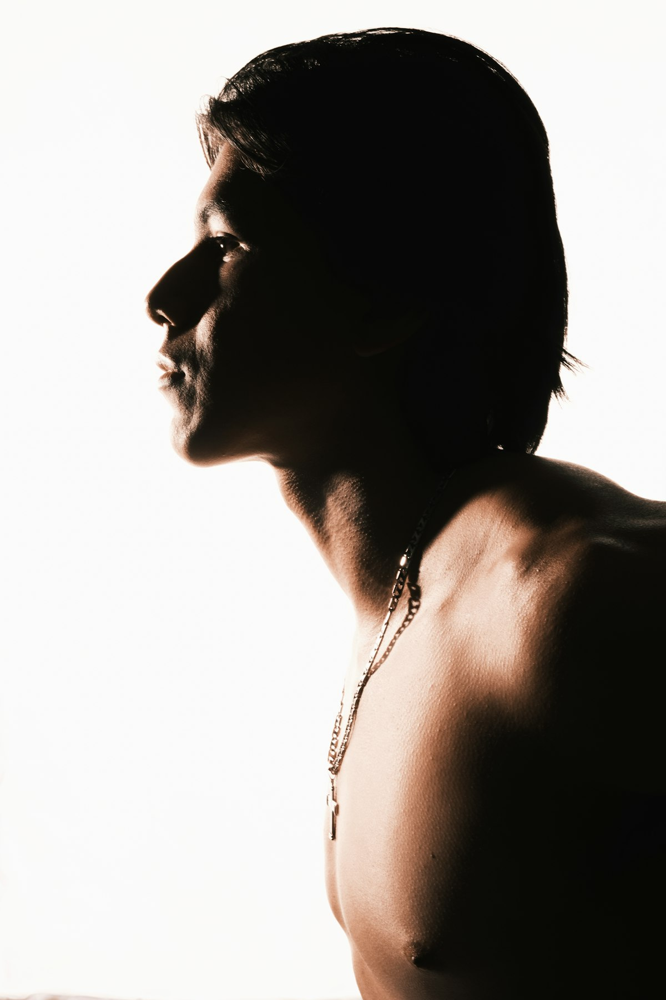

Guma žandikaulio treniruotėms
Kieta guma stipresniam žandikauliui
Kramtomoji guma, kuri priešinasi tavo sukandimui. Treniruok žandikaulio raumenis 10–15 minučių kas antrą dieną.
Parduotuvė
Pasirink kietumą
Kieta guma
Dideli gabalėliai, kurių skonis išlieka visą treniruotę. Geriausias pasirinkimas pradžiai.
Ypač kieta guma
Tankiausias mūsų gabalėlis. Didžiausias pasipriešinimas visą treniruotę.
6 mėnesių rinkinys
Trys pakuotės: derink bet kokius skonius ir abu kietumo lygius.

Tas pats žandikaulis, stipresnis raumuo
Raumuo, kuris formuoja žandikaulio liniją
Kramtomasis raumuo (masetras) yra ties žandikaulio kampu. Tai raumuo, kurį jauti išsipučiant, kai sukandi dantis. Minkštas maistas ir paprasta guma jo beveik neapkrauna. Kieta guma priverčia jį dirbti su tikru pasipriešinimu, taip pat kaip svoriai treniruoja bet kurį kitą raumenį.
- Treniruoja kramtomąjį raumenį – pagrindinį kramtymo raumenį
- Trumpos treniruotės su poilsio dienomis, kaip sporto salėje
- Geriausiai matosi, kai riebalų kiekis organizme mažesnis
Kodėl verta treniruoti žandikaulį
Mažas įprotis, matomas skirtumas
Stipresnis sukandimas
Reguliarios treniruotės su pasipriešinimu didina sukandimo jėgą, kaip ir bet kuris raumuo prisitaiko prie krūvio.
Ryškesnis žandikaulis
Treniruotas kramtomasis raumuo suteikia formos žandikaulio kampui. Sumažink riebalų – ir tai matysis.
15 minučių, bet kur
Jokių prietaisų ir sporto salės. Kramtyk prie stalo, automobilyje ar tarp serijų.

Guma
Gerokai kietesnė už paprastą gumą
Parduotuvės guma suminkštėja per kelias minutes. Cutline gaminama iš tankios gumos bazės su mažai minkštiklių, todėl išlaiko pasipriešinimą visą treniruotę – kiekvienas kramtymas yra pakartojimas.
- Du lygiai: kieta ir ypač kieta
- Be cukraus ir veganiška
- Aštuoni skoniai: nuo mėtų iki ledinių vyšnių
Kaip tai veikia
Viena treniruotė kas antrą dieną
Sušildyk
Padėk gumą ant galinių krūminių dantų ir palaipsniui sukąsk, kol ji šiek tiek suminkštės.
Kramtyk ratais
3 min. lėtai ir stipriai, 2 min. greičiau, 3 min. poilsio. Pakartok du ar tris kartus.
Ilsėkis
Raumenys auga poilsio dienomis. Kitą dieną vėl treniruokis.
Atsiliepimai
Ką sako kramtantys
DUK
Klausimai
Po kiek laiko pamatysiu rezultatą?
Žandikaulio raumenų darbą pajusi jau po pirmos treniruotės. Matomam pokyčiui reikia nuoseklių treniruočių kelias savaites ar mėnesius, ir jis labiausiai matosi, kai riebalų kiekis mažesnis.
Kaip dažnai treniruotis?
10–15 minučių kas antrą dieną. Daugiau kramtymo nereiškia greitesnio progreso: kaip ir bet kuris raumuo, kramtomasis raumuo auga poilsio dienomis.
Kieta ar ypač kieta: nuo kurios pradėti?
Pradėk nuo kietos. Ji skanesnė ir leidžia išmokti techniką. Pereik prie ypač kietos, kai visa treniruotė taps lengva.
Ar tai saugu dantims ir žandikauliui?
Kramtyk galiniais krūminiais dantimis, sustok pajutęs aštrų skausmą ir nenaudok, jei turi žandikaulio sąnario problemų, atsilaisvinusių plombų, implantų ar breketų. Netinka jaunesniems nei 14 metų.
Kur siunčiate?
Siunčiame visoje ES iš Lietuvos. Užsakymams nuo 49 € pristatymas nemokamas.
Gauk 10 % nuolaidą
Pirmam užsakymui
Užsiregistruok ir gauk 10 % nuolaidą, treniruočių patarimus ir žinias apie naujus skonius.
Ačiū, tu sąraše. 10 % nuolaidos kodą atsiųsime paleidimo metu.